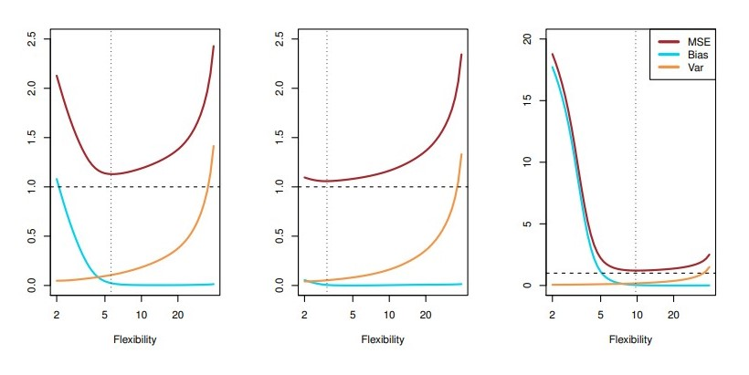
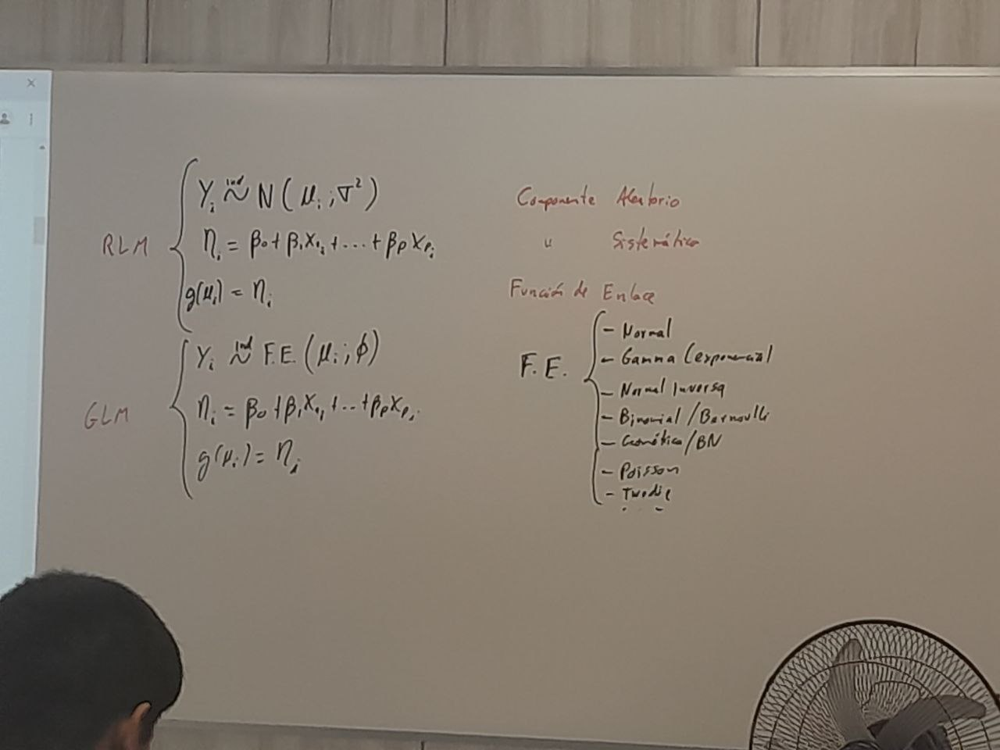
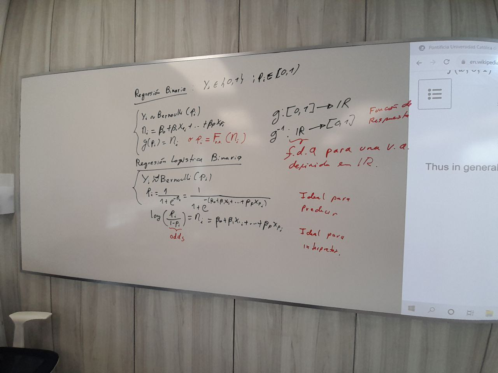

Apuntes de clase
Bias-variance tradeoff
Fijando un valor \(x_0\) para los predictores, y considerando una familia de training datasets, cada uno de esos training sets produce una estimación \(\hat{f}\) de la función \(f\).
Ahora, considere el siguiente resultado:
Theorem 1 \[ E \left[\left( Y - \hat{f}\left( x_o \right) \right)^2\right] = \text{ Var}\left( \epsilon \right) + \text{ Var}\left( \hat{f}\left( x_0 \right) \right) + \left[\text{ Bias}\left( \hat{f}\left( x_0 \right) \right)\right]^2 \]
El sesgo consiste en cómo se aleja el valor real de la variable, en comparacion con el promedio de las estimaciones.
Modelos que suelen tenor menor sesgo, suelen tener mayor varianza, y viceversa.
Proposition 1 Para modelos más flexibles, la varianza se incrementa y el sesgo disminuye. (not aaalways true).
Proposition 2 Resulta que el punto donde el \(\text{ MSE }_{test}\) alcanza un mínimo (en el eje Y, siendo el eje X el nivel de flexibilidad), a vecese coincide con el punto donde se intersectan el bias y varianza de la estimación \(\hat{f}\)
- Resumen:
- A medida que aumenta la complejidad (y, por tanto la flexibilidad) de un modelo, el modelo se vuelve más adaptable a estructuras subyacentes y cae el error de entrenaminto (sobreajuste)
- El error de prueba es el error de predicción sobre una muestra de prueba.
- Los modelos inflexibles (con parámetros para ajustarse) son fáciles de calcular pero pueden producir subajuste (alto sesgo).
- Los modelos flexibles pueden producir sobreajuste.
Clasificación
¿Qué es clasificación?
Modelo politómico: Cuando la variable respuesta cuenta con más de dos categorías.
Cuando el objetivo es predecir, no suele tomarse en cuenta la jerarquía (en caso exista) entre las categorías de la variable respuesta. Por ejemplo, en caso \(Y\) sea una variable ordinal.
Usualmente construimos modelos que predigan las probabilidades de categorías, dadas ciertas covariables \(X\).
No siempre los modelos de clasificación te danla clase y probabilidad de pertenencia a la clase. Los modelos por lo general dan solo la probabilidad de pertenencia a las clases. Por ejemplo:
- Regresión logística solo te da la probabilidad de pertenencia a la clase. Sin mbargo, ni en el caso binario basta la regla “probabilidad mayor de 50%” para asignar una clase a una nueva observación.
- Árboles de decisión te da la clase, pero no la probabilidad de pertenencia.
Configuración de la clasifiación general
- Contexto:
- La variable respuesta cuenta con una cantidad finita de valores posibles … categorías.
- La variable respuesta \(Y\) es cualitativa.
- Objetivo:
- Construir un clasificador que asigne una etiqueta de clasificación a una observación futura sin etiquetar, además de evaluar la incertidumbre en esta clasificación.
- Medidas de rendimiento
- La más popular es la tasa de error de clasificación érronea (versión de entrenamiento y prueba).
- Pérdida 0/1:
- Las clasificaciones erróneas reciben la pérdida 1; y las clasificaciones correctas, pérdida 0.
- No se emplea pérdida cuadrática para la clasificación.
Métodos Estadísticos Tradicionales para Clasificación
- Tres métodos comúnmente usados para clasificación:
- Regresión Logística
- Análisis Discrimante Lineal (LDA)
- Análisis Discrimante Cuadrático (QDA)


La exponential family es una familia de distribuciones, tales como la Normal, Gamma, Binomial, etc.
La función \(g\) se denomina función de enlace y debe satisfacer tener inversa, \(g^{-1}\), la cual se denomina función de respuesta.
Predicción con el modelo logit
Se denomina modelo logit al modelo de regresión logística binaria.
Es un modelo ideal para interpretar.
No es un modelo ideal para predecir, en especial si se tienen clases desbalanceadas.
Recuerde que desbalanceado no implica difícil de predecir. Además, clases desbalanceadas no es un problema de los datos.
Predicción
- \(\hat{p}_i = \dfrac{1}{1 + e^{-\eta_i}}\) = \(\dfrac{1}{1 + e^{-\left( \hat{\beta}_0 + \hat{\beta}_ 1 x_{1i} + \dots + \hat{\beta}_p x_{pi}\right)}}\)
- \[
\begin{equation}
\hat{Y}_i =
\begin{cases*}
1 & si $\hat{p}_i \geq c$ \\
0 & si $\hat{p}_i < c$
\end{cases*}
\end{equation}
\] donde \(c\) se denomina punto de corte (umbral).
Usualmente se utiliza \(c = 0.50\) .
Theorem 2 Se puede demostrar (es complicado) que con la elección de umbral \(c = 0.50\) se minimiza el error de clasificación; además de ser el único umbral que minimiza tal error.
¿Regresión lineal para una clasificación binaria?
- La regresión lineal puede producir probabilidades menores que cero o mayores que uno.
Regresión logística binaria
La response presenta solo dos categorías posibles.
Se modela entonces \(Y_i \sim Bernoulli(p_i)\) .
Objetivo: Estimar \(p_i = P\left( Y_i = 1 \mid X_1, \dots, X_p \right)\)